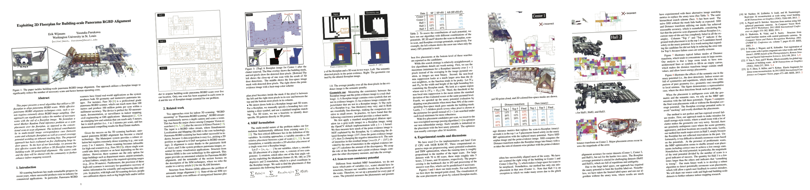

The data and code have been release! Use the links at the top of the page
CVPR2017
 Supplementary Material
Supplementary Material
Dataset Demonstration
Results Video
Abstract
This paper presents a novel algorithm that utilizes a 2D floorplan to align panorama RGBD scans.
While effective panorama RGBD alignment techniques exist, such a system requires extremely dense RGBD image sampling. Our approach can significantly reduce the number of necessary scans with the aid of a floorplan image. We formulate a novel Markov Random Field inference problem as a scan placement over the floorplan, as opposed to the conventional scan-to-scan alignment. The technical contributions lie in multi-modal image correspondence cues (between scans and schematic floorplan) as well as a novel coverage potential avoiding an inherent stacking bias. The proposed approach has been evaluated on five challenging large indoor spaces. To the best of our knowledge, we present the first effective system that utilizes a 2D floorplan image for building-scale 3D pointcloud alignment. The source code and the data are shared with the community to further enhance indoor mapping research.
arXiv Submission
Citation
@inproceedings{wijmans17rgbd,
author = {Erik Wijmans and
Yasutaka Furukawa},
title = {Exploiting 2D Floorplan for Building-scale Panorama RGBD Alignment},
booktitle = {Computer Vision and Pattern Recognition, {CVPR}},
year = {2017},
url = {http://cvpr17.wijmans.xyz/CVPR2017-0111.pdf}
}